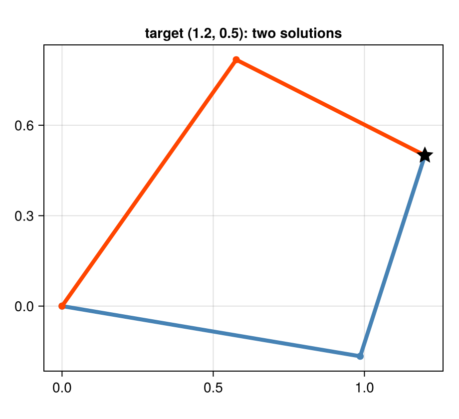
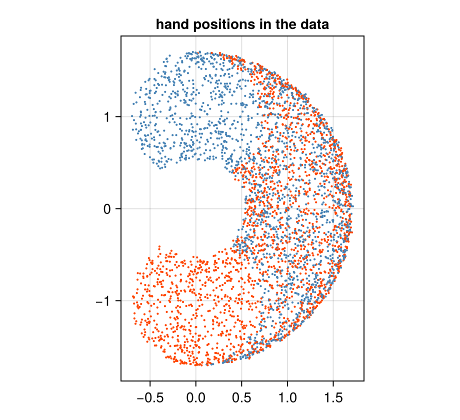
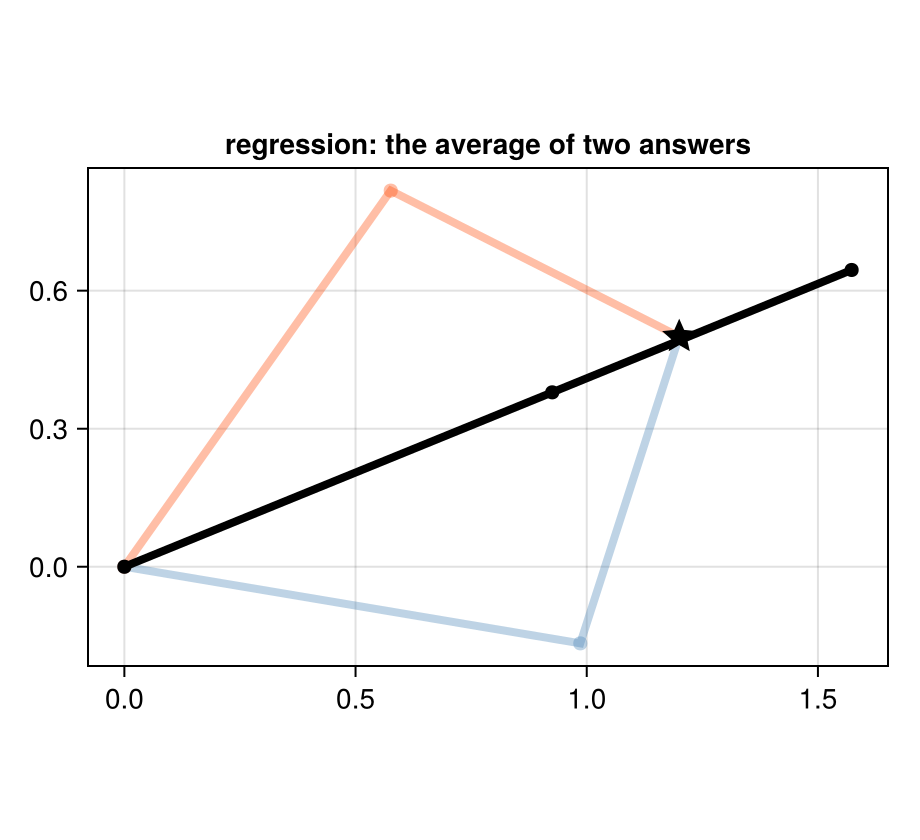
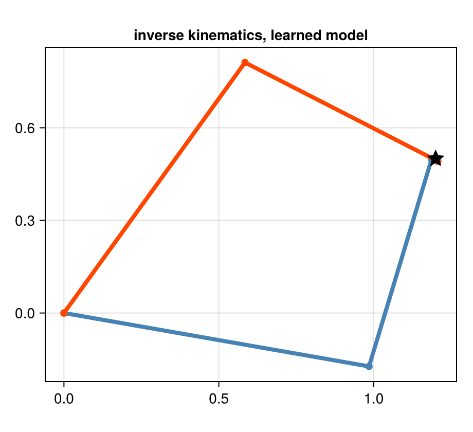
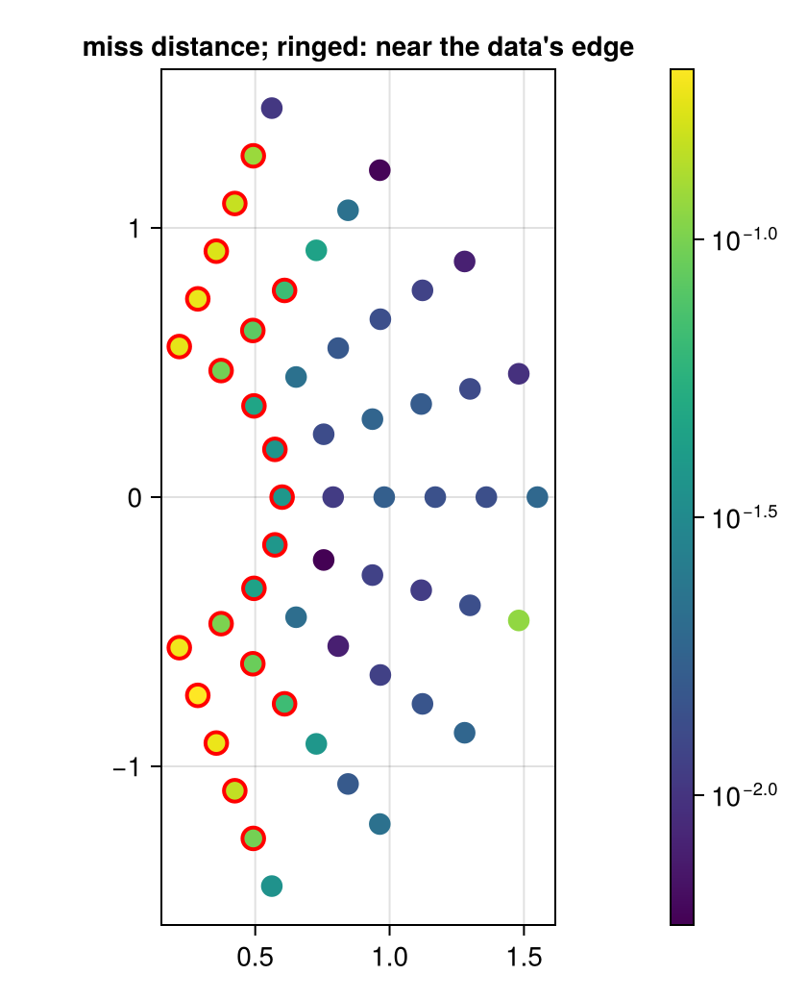

Robot arm: one model, every direction
Download as a Jupyter notebook
A planar arm with two links has one forward map, from joint angles to hand position, and usually two inverse solutions: elbow up and elbow down. This tutorial trains one small diffusion model on samples of arm configurations and uses it for forward kinematics, inverse kinematics and a mixed query, choosing at query time which coordinates are inputs. It also shows why fitting a function in the inverse direction fails.
using VariationalDiffusion, Lux, LuxCore, Random, LinearAlgebra, Optimisers, Statistics, Printf
using DifferentiationInterface, Zygote
using CairoMakieThe arm
Links of length $\ell_1 = 1$ and $\ell_2 = 0.7$, shoulder angle $\theta_1$, elbow angle $\theta_2$:
\[x = \ell_1\cos\theta_1 + \ell_2\cos(\theta_1+\theta_2),\qquad y = \ell_1\sin\theta_1 + \ell_2\sin(\theta_1+\theta_2).\]
const L1, L2 = 1.0, 0.7
fk(θ1, θ2) = (L1 * cos(θ1) + L2 * cos(θ1 + θ2), L1 * sin(θ1) + L2 * sin(θ1 + θ2))fk (generic function with 1 method)The exact inverse, for reference: two solutions, mirror images in the line from the shoulder to the hand.
function ik(x, y)
c = (x^2 + y^2 - L1^2 - L2^2) / (2L1 * L2)
abs(c) > 1 && return nothing # out of reach
return map((+1, -1)) do s
θ2 = s * acos(c)
(atan(y, x) - atan(L2 * sin(θ2), L1 + L2 * cos(θ2)), θ2)
end
end
function draw_arm!(ax, θ1, θ2; color, label = nothing)
e, h = (L1 * cos(θ1), L1 * sin(θ1)), fk(θ1, θ2)
lines!(ax, [0, e[1], h[1]], [0, e[2], h[2]]; color, linewidth = 4, label)
scatter!(ax, [0, e[1], h[1]], [0, e[2], h[2]]; color, markersize = 10)
end
fig = Figure(size = (460, 420))
ax = Axis(fig[1, 1]; aspect = DataAspect(), title = "target (1.2, 0.5): two solutions")
for (sol, c) in zip(ik(1.2, 0.5), (:steelblue, :orangered))
draw_arm!(ax, sol...; color = c)
end
scatter!(ax, [1.2], [0.5]; marker = :star5, markersize = 20, color = :black)
fig
The data and the joint space
The joint space is $Z = (\theta_1, \theta_2, x, y)$. Valid configurations form a two-dimensional surface in it, the graph of fk. We sample it with the shoulder in $[-\pi/2, \pi/2]$ and the elbow in $[-2.6, 2.6]$ (avoiding the fold at $\pm\pi$) and add a little noise, as a sensor would.
const Θ1, Θ2 = (-π / 2, π / 2), (-2.6, 2.6)
function sample_arm(rng, n; noise = 0.01)
θ1 = Θ1[1] .+ (Θ1[2] - Θ1[1]) .* rand(rng, n)
θ2 = Θ2[1] .+ (Θ2[2] - Θ2[1]) .* rand(rng, n)
xy = fk.(θ1, θ2)
return vcat(θ1', θ2', first.(xy)', last.(xy)') .+ noise .* randn(rng, 4, n)
end
data = sample_arm(Xoshiro(0), 4000)
fig = Figure(size = (460, 420))
ax = Axis(fig[1, 1]; aspect = DataAspect(), title = "hand positions in the data")
scatter!(ax, data[3, :], data[4, :]; markersize = 3, color = data[2, :] .> 0, colormap = [:orangered, :steelblue])
fig
Every hand position inside the workspace is reached twice, once with $\theta_2 > 0$ (blue) and once with $\theta_2 < 0$ (red).
Why a function fails
The obvious approach is regression: fit a network $(x, y) \mapsto (\theta_1, \theta_2)$ by least squares. Least squares estimates the conditional mean (the classic argument for mixture density networks (Bishop, 1994)), and with two equally likely answers the mean is their average, a pose that reaches neither.
reg = Chain(Dense(2 => 64, swish), Dense(64 => 64, swish), Dense(64 => 2))
function fit_regression(rng; steps = 4000)
ps, st = Lux.setup(rng, reg)
ts = Training.TrainState(reg, ps, st, Optimisers.Adam(1.0f-3))
for _ in 1:steps
d = sample_arm(rng, 256)
_, _, _, ts = Training.single_train_step!(AutoZygote(), MSELoss(), (Float32.(d[3:4, :]), Float32.(d[1:2, :])), ts)
end
return ts.parameters, ts.states
end
psr, str = fit_regression(Xoshiro(1))
θreg = Float64.(first(reg(Float32[1.2, 0.5], psr, str)))2-element Vector{Float64}:
0.3887609839439392
0.000922568142414093The regression's answer for the target $(1.2, 0.5)$ and where it puts the hand:
(θ = θreg, hand = fk(θreg...))
fig = Figure(size = (460, 420))
ax = Axis(fig[1, 1]; aspect = DataAspect(), title = "regression: the average of two answers")
for (sol, c) in zip(ik(1.2, 0.5), (:steelblue, :orangered))
draw_arm!(ax, sol...; color = (c, 0.35))
end
draw_arm!(ax, θreg...; color = :black)
scatter!(ax, [1.2], [0.5]; marker = :star5, markersize = 20, color = :black)
fig
The elbow angle comes out near zero, the average of $\pm 1.43$: the arm is stretched out straight, and the hand misses the target by almost 0.4. More data or a bigger network does not help; the model class is wrong. A function can represent one answer per input, and this problem has two.
A diffusion model of the joint space
Instead, model the joint distribution of all four coordinates with a small diffusion model and read the relation off it, as in the previous tutorial.
const sched = VPSDE()
const FREQ = [0.5, 1.0, 2.0, 4.0, 8.0]
embed(t) = vcat(sin.((2π .* t) .* FREQ), cos.((2π .* t) .* FREQ))
input(z, t) = vcat(z, embed(t) .* ones(eltype(z), 1, size(z, 2)))
net = Chain(Dense(14 => 128, swish), Dense(128 => 128, swish), Dense(128 => 128, swish), Dense(128 => 4))
function dsm_batch(rng, B)
z₀ = sample_arm(rng, B)
t = 1e-3 .+ 0.2 .* rand(rng, 1, B)
ε = randn(rng, 4, B)
zₜ = alpha.(Ref(sched), t) .* z₀ .+ sigma.(Ref(sched), t) .* ε
return (Float32.(vcat(zₜ, embed(t))), Float32.(ε))
end
function train(rng; steps = 12_000)
ps, st = Lux.setup(rng, net)
ts = Training.TrainState(net, ps, st, Optimisers.Adam(1.0f-3))
for k in 1:steps
k == steps ÷ 2 && (ts = Training.TrainState(net, ts.parameters, ts.states, Optimisers.Adam(3.0f-4)))
_, _, _, ts = Training.single_train_step!(AutoZygote(), MSELoss(), dsm_batch(rng, 512), ts)
end
return ts.parameters, ts.states
end
f64(x::AbstractArray) = Float64.(x); f64(x::NamedTuple) = map(f64, x); f64(x) = x
ps, st = train(Xoshiro(2))
ps = f64(ps)
m = ImplicitDiffusion(NoisePredictor(net, sched; input),
field_nodes(Xoshiro(1), 4; samples = 4, levels = range(0.002, 0.03; length = 6)))
Lux.parameterlength(net)35460Three kinds of query, one model
The precision vector chooses the direction: Inf clamps a coordinate, 0 leaves it free.
const FORWARD = [Inf, Inf, 0.0, 0.0] # angles given, find the hand
const INVERSE = [0.0, 0.0, Inf, Inf] # hand given, find the anglesInverse kinematics. Clamp the target, start the elbow once bent up and once bent down:
target = (1.2, 0.5)
sols = [first(implicit_infer(m, [0.0, s, target...], INVERSE, ps, st; maxiters = 300)) for s in (1.0, -1.0)]
for s in sols
@printf "θ = (%+.3f, %+.3f) hand %s miss %.4f stable %s\n" s.z[1] s.z[2] round.(fk(s.z[1], s.z[2]); digits = 3) hypot((fk(s.z[1], s.z[2]) .- target)...) s.stable
endθ = (-0.174, +1.452) hand (1.187, 0.497) miss 0.0136 stable true
θ = (+0.947, -1.421) hand (1.207, 0.492) miss 0.0111 stable true
Compare with the exact solutions:
ik(target...)
fig = Figure(size = (460, 420))
ax = Axis(fig[1, 1]; aspect = DataAspect(), title = "inverse kinematics, learned model")
for (s, c) in zip(sols, (:steelblue, :orangered))
draw_arm!(ax, s.z[1], s.z[2]; color = c)
end
scatter!(ax, [target[1]], [target[2]]; marker = :star5, markersize = 20, color = :black)
fig
Forward kinematics, the same model with the other precision vector:
θq = (0.3, 1.0)
fwd, _ = implicit_infer(m, [θq..., 1.0, 0.0], FORWARD, ps, st; maxiters = 300)
(learned = fwd.z[3:4], exact = fk(θq...))(learned = [1.130096776664841, 0.9837721773518887], exact = (1.1425856691628171, 0.9700109364533747))A mixed query. Given the shoulder angle and the hand's $x$-coordinate, find the elbow angle and $y$. Neither "forward" nor "inverse", and no model was trained for it.
mixed, _ = implicit_infer(m, [0.2, 0.5, 1.3, 0.3], [Inf, 0.0, Inf, 0.0], ps, st; maxiters = 300)
(θ2 = mixed.z[2], y = mixed.z[4], check = fk(0.2, mixed.z[2]))(θ2 = 0.908266176592454, y = 0.8284180667511565, check = (1.2924162595083029, 0.8251177934497999))The check recomputes the hand from $\theta_1 = 0.2$ and the inferred $\theta_2$: its $x$ should be $1.3$ and its $y$ the inferred one.
Accuracy over the workspace
Run inverse kinematics on a grid of reachable targets, both branches each, and measure how far the inferred pose puts the hand from the target. Each target is also classified by whether both of its exact solutions lie inside the training ranges of the angles.
targets = [(r * cos(φ), r * sin(φ)) for r in range(0.6, 1.55; length = 6) for φ in range(-1.2, 1.2; length = 9)]
miss(s, tg) = hypot((fk(s.z[1], s.z[2]) .- tg)...)
errs = [miss(first(implicit_infer(m, [0.0, b, tg...], INVERSE, ps, st; maxiters = 300)), tg) for tg in targets for b in (1.0, -1.0)]
inside(tg) = all(s -> Θ1[1] ≤ s[1] ≤ Θ1[2] && Θ2[1] + 0.2 ≤ s[2] ≤ Θ2[2] - 0.2, ik(tg...))
indist = repeat(inside.(targets); inner = 2)
errstats(e) = (n = length(e), median = round(median(e); digits = 4), p90 = round(quantile(e, 0.9); digits = 4))
(in_distribution = errstats(errs[indist]), near_or_outside_edge = errstats(errs[.!indist]))(in_distribution = (n = 66, median = 0.0114, p90 = 0.0218), near_or_outside_edge = (n = 42, median = 0.0374, p90 = 0.1759))Inside the training distribution (both solutions at least 0.2 rad from the limits of the elbow, shoulder within $\pm\pi/2$) the hand lands a median 0.011 from the target, and 90% of the queries within 0.022, about one percent of the arm's reach of 1.7. The large misses are all near or beyond the edge of the data: the innermost targets need the elbow almost folded, near its limit of $\pm 2.6$, and the steepest ones need shoulder angles beyond $\pm\pi/2$, which the model has never seen. That is the honest behaviour of any learned model out of distribution, and the map shows where it happens.
fig = Figure(size = (420, 520))
ax = Axis(fig[1, 1]; aspect = DataAspect(), title = "miss distance; ringed: near the data's edge")
emax = [max(errs[2i - 1], errs[2i]) for i in eachindex(targets)]
sc = scatter!(ax, first.(targets), last.(targets); color = emax, colormap = :viridis, markersize = 16, colorscale = log10,
strokecolor = :red, strokewidth = 2 .* .!inside.(targets))
Colorbar(fig[1, 2], sc)
fig
Summary
| regression $(x,y)\mapsto\theta$ | diffusion model as a relation | |
|---|---|---|
| inverse kinematics | one answer, the average of two; misses | both branches, chosen by the start |
| forward kinematics | needs a second model | same model, other precision vector |
| mixed queries | needs a model per query type | same model |
| cost per query | one forward pass | a Newton solve (tens of network calls) |
The price of the relation is inference cost: each query is a small root-finding problem. What it buys is one model for every direction, and every answer, not their average.
References
- Bishop, C. M. (1994). Mixture Density Networks. Technical Report NCRG/94/004 (Aston University).
This page was generated using Literate.jl.